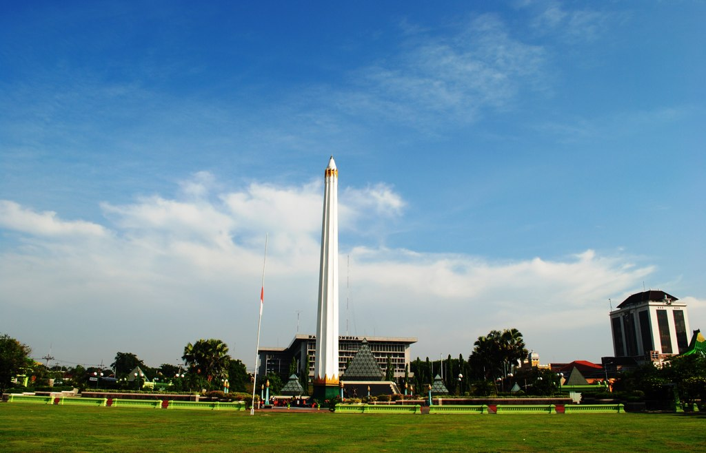

My Hometown
Surabaya • The City of Heroes (Kota Pahlawan)

About Surabaya
Surabaya is the capital of East Java and Indonesia's second-largest metropolitan city. Strategically perched on the northeastern coast of Java along the Madura Strait, it serves as a historic maritime hub, commercial gateway, and industrial powerhouse of Eastern Indonesia.
The name derives from sura (shark) and baya (crocodile), symbolizing the triumph of courage and bravery against all odds.
City of Heroes (Kota Pahlawan)
Surabaya earned its legendary title during the fierce Battle of Surabaya starting on 10 November 1945. Defending the newly proclaimed Republic of Indonesia against Allied forces, local youth (Arek-arek Suroboyo) rallied behind Bung Tomo's impassioned radio broadcast.
The indomitable sacrifice of Surabaya's citizens galvanized nationwide resistance, making 10 November celebrated annually as Indonesia's National Heroes' Day (Hari Pahlawan).
Culture & Character of Arek Suroboyo
The people of Surabaya are well known for their direct, honest (blak-blakan), and egalitarian nature, united by their distinctive Boso Suroboyoan dialect. The city harmoniously blends deep Javanese, Madurese, Chinese, and Arab cultural influences, creating a welcoming, lively metropolis renowned for culinary richness, lively night markets, and enduring community solidarity.